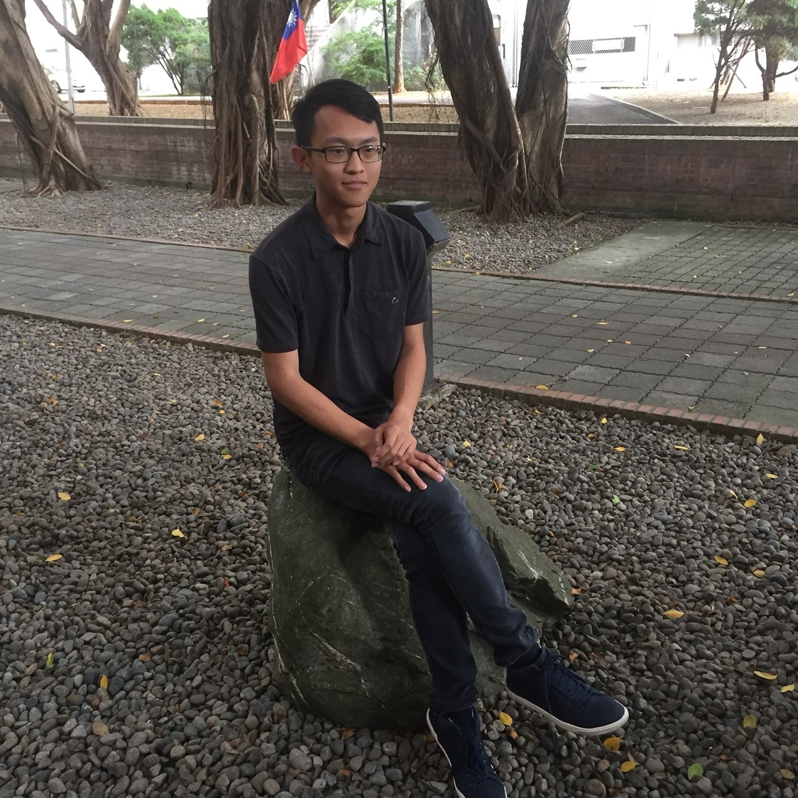
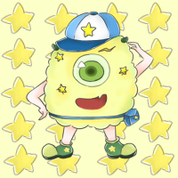
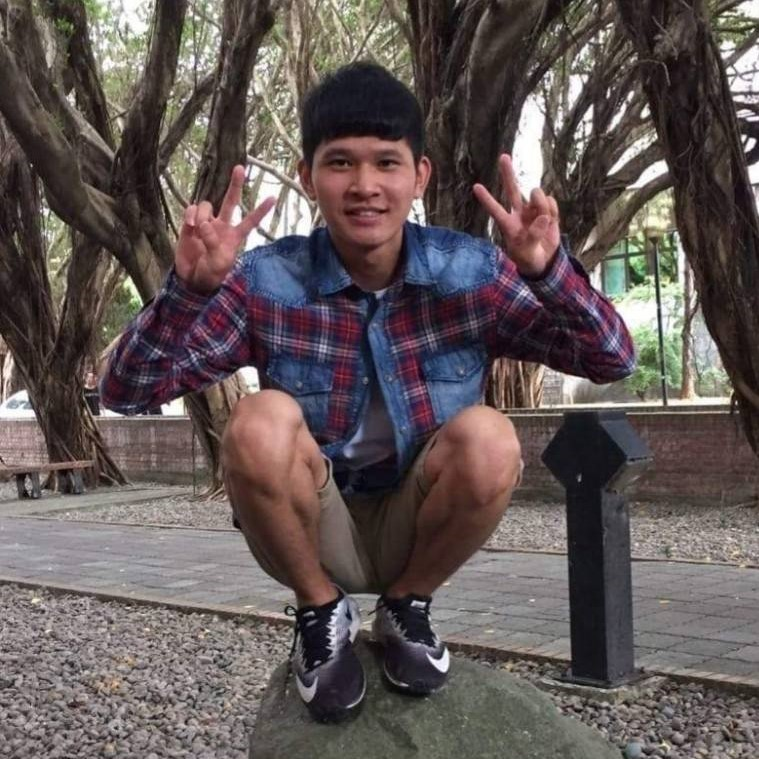
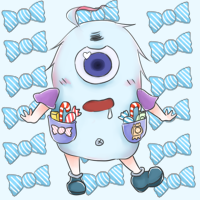

杜得瑋:
本來以行銷學校教學資源的大方向在組員討論後聚焦到以「樂學園」內各個區域的功能和教學、自學、輔導資源為主題，旨在以影片導覽和資源展示來行銷這個中原大學獨有的多功能學習與展演空間。我負責的是資料蒐集、文本、部分的影片和照片的拍攝、出演，在專案計畫與討論的過程中自己也更深入了解校內的設施和規劃，才發現其實學校確實提供了不錯的教學資源和藝術空間，算是對學校有了更豐富的認識。
王筱瑜：
這次期中專案的網頁框架和大部分的排版都是我設計的，在寫CSS的時候遇到了很多困難，比如如果使用了趴數只要網頁一縮小排版就會亂掉、為了要讓組員的大頭貼能切換兩種圖片，在網路上找很久、為了要在首頁放滑動照片跑去找上一次的甲班夥伴，讓他教我怎麼寫，而當我解決了一個又一個的問題，成就感簡直要把我淹沒了，但我還有許多的缺點要修正，而我的組員們幫我處理其他文書和影片，還幫我調了網頁的色調和設計了四個腳色，因為他們我才能專心地修改程式。

黃昱齊：
這次期中專案我是負責文書、主題方面的工作，雖然網頁主要不是我寫的，但我們還是有一同約出來討論網頁設計，因為平時的練習題都比較少做排版的練習，所以我們在框架的部分弄很久，碰到一些困難，但最後都算是有解決。然而，這次期中專案主要是要行銷中原大學，所以影片的部分雖然我們入鏡時間較短，但也確實有做到行銷的部分。我覺得整體來說除了排版可能會有小問題外，其他部分都算完成，這些都要謝謝組員們的幫忙及分工下才能做出來的。
儲韶儀:
這次期中專案我是負責剪輯影片以及網頁背景設計的工作，由於是第一次剪輯影片，所以途中有很多不順手的地方，雖然耗費了很多時間去解決問題，但是這也讓我學到了很多關於剪輯軟件的用法。而關於背景圖的設計則是以可愛的小插圖為主題，而背景的整體配色則是偏向可愛的馬卡龍色系，雖然在準備的時間上有些匆忙，但最終還是成功地完成了繪圖。經過這次的期中報告也學習到了很多有關版面設計的CSS語法，非常感謝耐心教導我的組員。